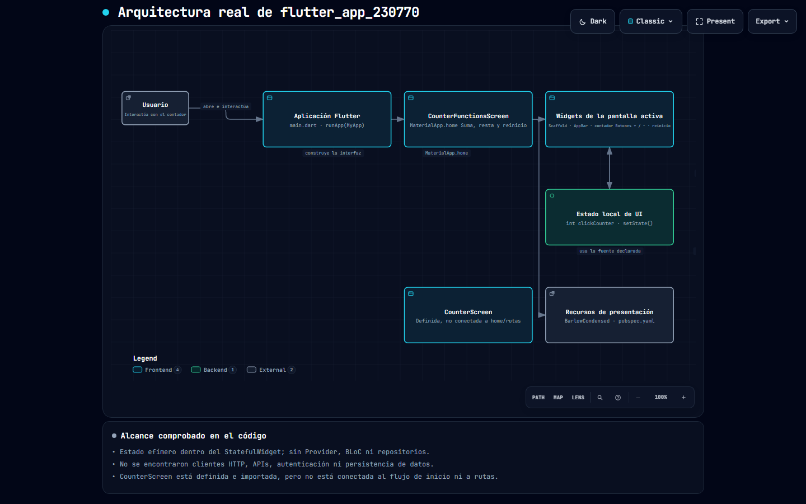

En esta práctica se desarrolló una aplicación de contador en Flutter, con modificaciones en la interfaz y en el comportamiento del contador.
La aplicación permite aumentar y disminuir un valor numérico y personaliza la apariencia del número según su valor:
Este diagrama describe la estructura general de la aplicación y sus componentes.
